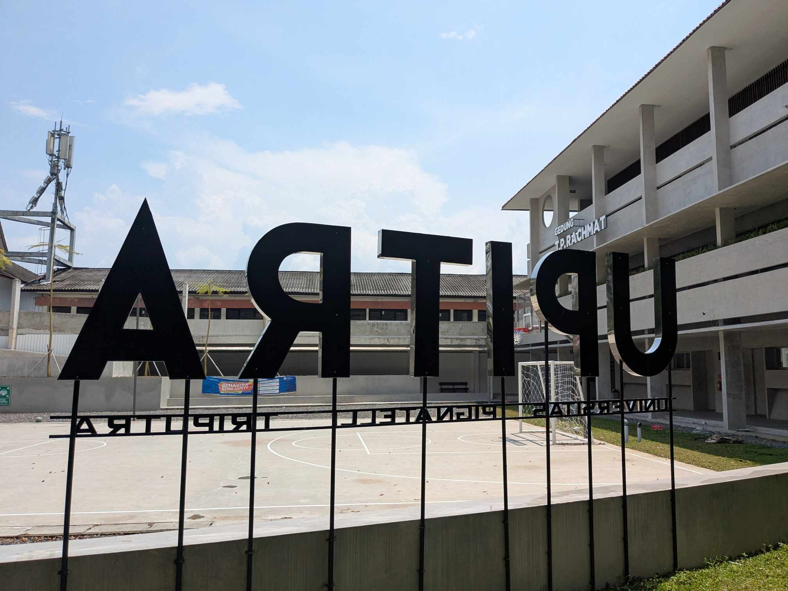

Fakultas Sains dan Teknologi Universitas Pignatelli Triputra (FST Upitra) resmi meraih predikat akreditasi Unggul dari Badan Akreditasi Nasional Perguruan Tinggi (BAN-PT), menjadikannya salah satu fakultas baru dengan pencapaian tertinggi dalam sejarah akreditasi di lingkungan Universitas Pignatelli Triputra.
Pengumuman resmi diterima oleh pihak fakultas pada tanggal 10 Mei 2025, setelah melalui proses asesmen lapangan yang ketat dan komprehensif oleh tim asesor BAN-PT selama tiga hari berturut-turut pada akhir April lalu. Predikat Unggul merupakan tingkatan akreditasi tertinggi yang diberikan oleh BAN-PT kepada program studi maupun institusi pendidikan tinggi di Indonesia.

Proses Panjang Menuju Unggul
Perjalanan menuju akreditasi Unggul ini bukanlah hal yang mudah. FST Upitra, yang baru berdiri sejak 2022, harus memenuhi puluhan instrumen penilaian yang mencakup aspek tata kelola, kualitas dosen, kurikulum, fasilitas, keterlibatan industri, hingga luaran penelitian dan pengabdian masyarakat.
Dekan FST Upitra, Drs. Djymoon Hidayat, M.S., M.A., Ph.D, menyampaikan bahwa capaian ini merupakan hasil kerja keras seluruh civitas akademika selama tiga tahun terakhir. Beliau menegaskan bahwa akreditasi ini bukan akhir dari perjalanan, melainkan fondasi untuk terus meningkatkan kualitas pendidikan bagi mahasiswa.
Akreditasi Unggul ini adalah bukti komitmen kami. Bukan sekadar angka, melainkan cerminan dari kesungguhan seluruh keluarga besar FST Upitra dalam mendidik generasi penerus bangsa.
Dampak bagi Mahasiswa dan Alumni
Dengan diraihnya akreditasi Unggul, mahasiswa FST Upitra kini memiliki keunggulan kompetitif yang lebih besar di pasar kerja. Banyak perusahaan, instansi pemerintah, maupun lembaga pendidikan lanjutan yang menjadikan akreditasi institusi sebagai salah satu syarat penerimaan.
Selain itu, mahasiswa juga berpeluang mendapatkan beasiswa dari berbagai lembaga yang mensyaratkan perguruan tinggi terakreditasi Unggul, termasuk beasiswa dari Kemendikbudristek, LPDP, dan sejumlah perusahaan swasta nasional maupun multinasional.
Langkah ke Depan
FST Upitra telah menyiapkan peta jalan pengembangan jangka menengah 2025–2030 yang mencakup peningkatan riset kolaboratif, perluasan jaringan kerja sama industri internasional, pengembangan kurikulum berbasis kompetensi masa depan, serta peningkatan fasilitas laboratorium dan pusat inovasi teknologi.
Civitas akademika FST Upitra berharap capaian ini menjadi pemicu semangat seluruh mahasiswa untuk terus berprestasi dan mengharumkan nama almamater di kancah nasional maupun global.